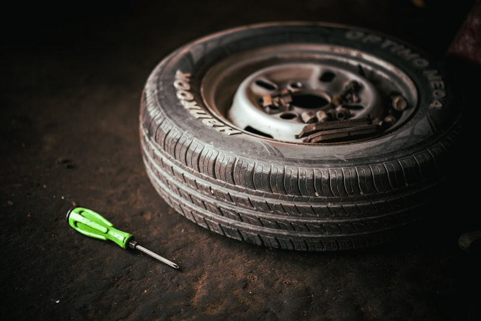
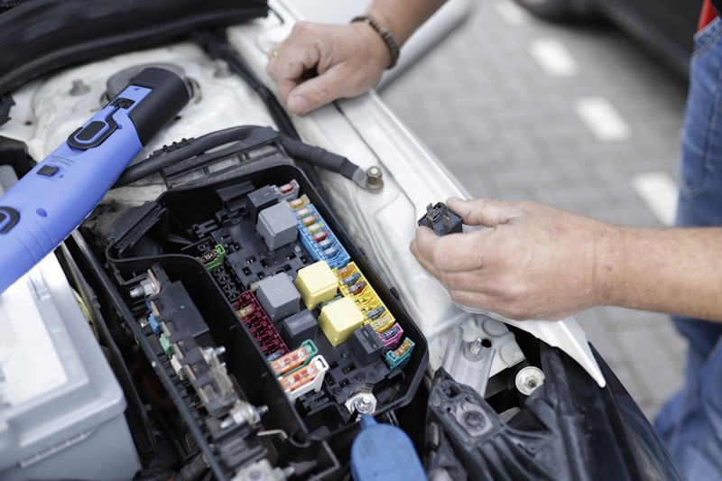

Home / How it works
The $29 Vehicle Health Scan.
Forty-seven points, about ninety minutes, and a report on your phone with a photograph and a price on every line. Nothing gets touched until you approve it.
Three steps, and you decide at every one.
-
01
Drop it off, or wait for it.
Ten minutes of paperwork, or none at all if you booked online. Coffee, wifi, and a window into the bay so you can watch your own car. Loaner cars are free on anything we keep overnight, first come first served.
-
02
We scan it and photograph everything.
On a lift with the wheels off. Every finding gets a photo or a short video, and every measurement goes in as a number — 2.1mm, not “low.” If a tech can’t photograph it, it doesn’t go on your report.
-
03
You approve it line by line.
A link arrives by text. Tap what you want done, decline the rest, and the total updates as you go. Then we start — and not a minute before. No call, no pitch, no service writer working an angle.
This is a real report.
Here’s what landed on a customer’s phone last Tuesday, with the name and plate removed. Open any line. Toggle what you’d approve — the total moves with you, exactly like the real thing.
RO #24-8817 · 2018 Honda CR-V EX · 94,318 mi
Inspected by Marcus Deel, ASE Master · Tue 10:07–11:31 AM
-
7mm of 10mm left on the pads, rotors well inside spec, slide pins moving freely. These will get you through next winter without any trouble. We’ll look again at your next oil change.
Measured: LF 7.1mm · RF 6.9mm · Rotor 24.6mm (min 22.0mm)
-

2mm of 10mm on both rear pads, and the rotors are scored past minimum thickness — you can catch a fingernail in the grooves. This is the noise you described at the stop sign. Pads alone won’t fix it; the new pads would just re-cut themselves on those grooves.
Measured: LR 2.1mm · RR 1.8mm · Rotor 19.4mm (min 21.0mm)
-

Both links have play you can feel by hand with the wheel off. This is your clunk over the railroad tracks on Wealthy Street — not the struts, which are fine. Cheapest real fix for that noise.
Verified on the lift with a pry bar, both sides, second tech listening.
-

Fine cracking across the ribbed side. It isn’t going to strand you this month, but it’s past the middle of its life. Our honest advice: leave it, and do it in spring when it’s warm and you’re not paying us to work in a cold bay.
Roughly 4–6 cracks per inch. Replace by approx. 105,000 mi.
-
Packed with leaf debris — the usual for a car that parks under maples. It won’t hurt the engine, it just makes the defroster slow and the cabin smell like a wet yard. Six-dollar part if you want to do it yourself; we’ll show you where it lives.
Airflow restricted. Part #80292-TZ5-A41.
-
6/32" front, 7/32" rear, wearing evenly across all four shoulders. That even wear is the tell that your alignment is still good — no need to pay us for one. You’ve got about another year on these.
LF 6/32 · RF 6/32 · LR 7/32 · RR 7/32. Replace at 4/32.
-
12.6 volts at rest and it held 620 cold-cranking amps against a 640 rating under load. Alternator output is steady. This battery is four years old, which is when a lot of shops would tell you to replace it “to be safe.” It tested fine. Keep it.
Resting 12.61V · Load 620/640 CCA · Charging 14.2V
Sample report built from a real repair order, republished with the customer’s permission. Vehicle details and identifying information changed.
What’s in the 47 points.
Wheels off, on a lift. Every item below comes back to you as a measured number or a photograph, not a green checkmark.
Braking — 9 points
Pad thickness at four corners, rotor thickness and runout, caliper slide pins, hoses and lines, fluid moisture content, parking brake travel, ABS codes.
Tires & wheels — 8 points
Tread depth at each tire, wear pattern, sidewall condition, age from the DOT date code, pressures, TPMS function, lug torque, spare condition.
Suspension & steering — 8 points
Ball joints, tie rods, control arm bushings, sway bar links, strut and shock condition, mounts, wheel bearing play, power steering leaks.
Under the hood — 11 points
Oil level and condition, coolant strength and level, brake and transmission fluid, belts, hoses, air filter, cabin filter, battery load test, charging output, terminals, visible leaks.
Underneath — 6 points
Exhaust system and hangers, CV boots and axles, differential and transfer case, engine and transmission mounts, undercarriage corrosion, skid plates and shields.
Electrical & cabin — 5 points
All exterior lights, wipers and washers, horn, heat and air conditioning output temperature, stored and pending computer codes.
What’s it doing?
Pick the closest one. We’ll tell you what it usually turns out to be, what it usually costs, and how we’d actually go about confirming it — before you spend a dollar.
Choose a symptom and we’ll show you our actual diagnostic path for it — including the times it turns out to be nothing.
Questions about the scan
Because a free inspection isn’t an inspection, it’s a sales tool — the shop makes its money on what the inspection sells you, which is exactly the incentive you’re worried about. Charging a small fee lets our techs get paid for ninety honest minutes whether or not you buy anything. And you don’t really pay it: the $29 comes off the first repair you approve.
Then we fix some of it. Tap the items you want, leave the rest, and we do exactly that. If you decline something genuinely unsafe — brakes down to metal, a tie rod about to let go — we’ll say so once, in writing, and then respect your decision. It’s your car and your money.
The scan runs about ninety minutes and you’re welcome to wait — there’s coffee, wifi and a window into the bay. If you approve repairs, most common jobs go same day. Anything we keep overnight comes with a free loaner, first come first served.
No, and a good share of our scans are on cars with nothing wrong. People book them before a road trip, before a Michigan winter, after buying a used car, or just to find out whether the last shop’s list was real. Finding nothing is a perfectly good result and we’ll tell you so.
They stay attached to your vehicle history, so next visit we can put this year’s brake measurement next to last year’s and show you the actual wear rate. That’s how we can tell you “another winter” and mean it. You can ask for a copy of anything, any time.
Bring it in. We’ll look at the car and tell you whether the quote is fair, high, or for work that doesn’t need doing, and we won’t charge you for that opinion. Sometimes we tell people their existing shop got it right and to go back. That happens more than you’d think.
Ninety minutes and you’ll know.
$29, credited back against anything you decide to fix. If you decide to fix nothing, that’s a fine outcome too — you’ll still know exactly where the car stands and what it’ll cost when the time comes.